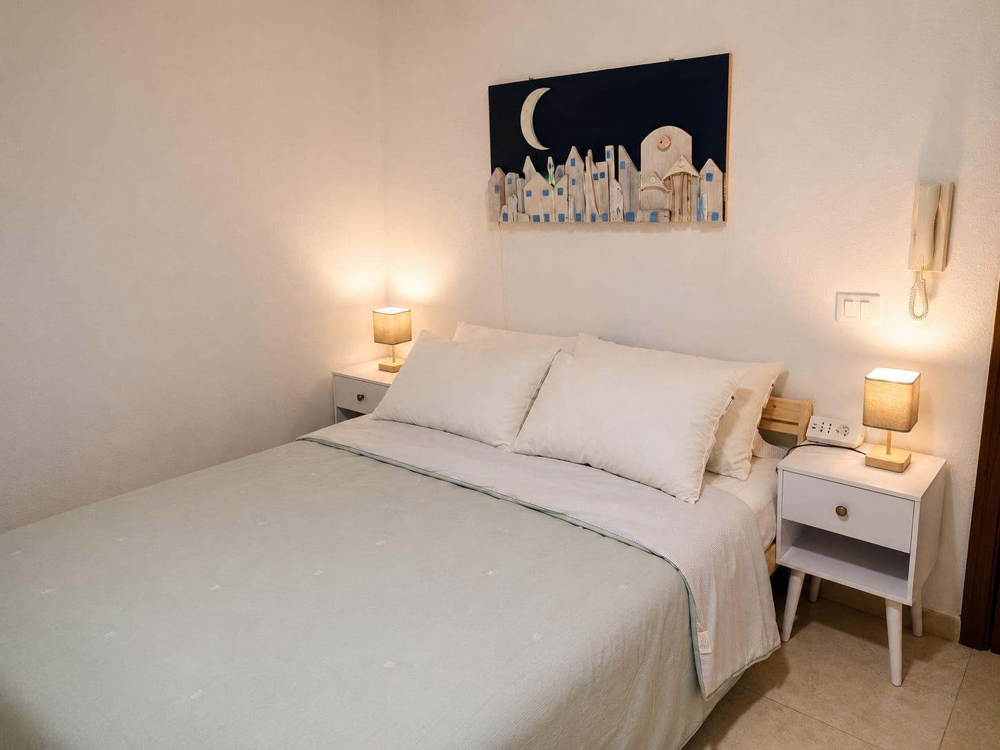
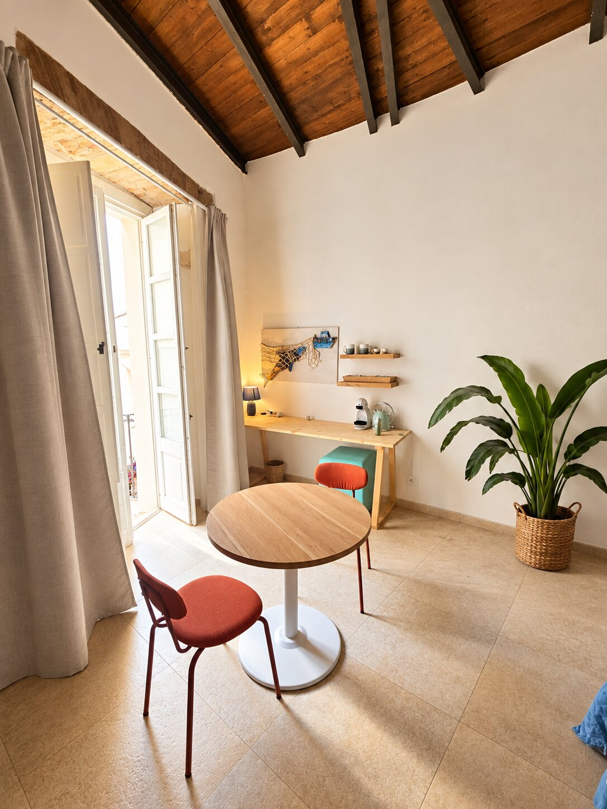
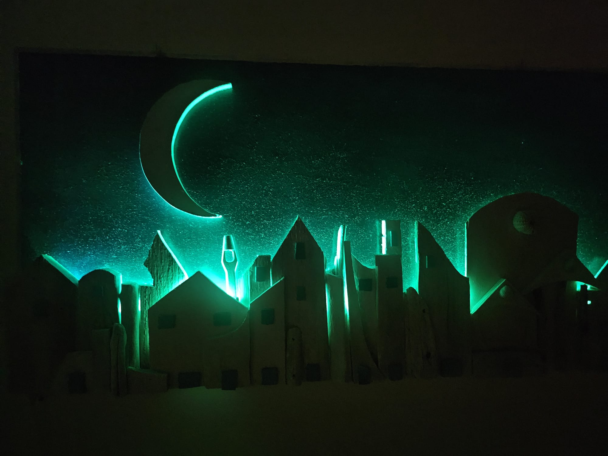
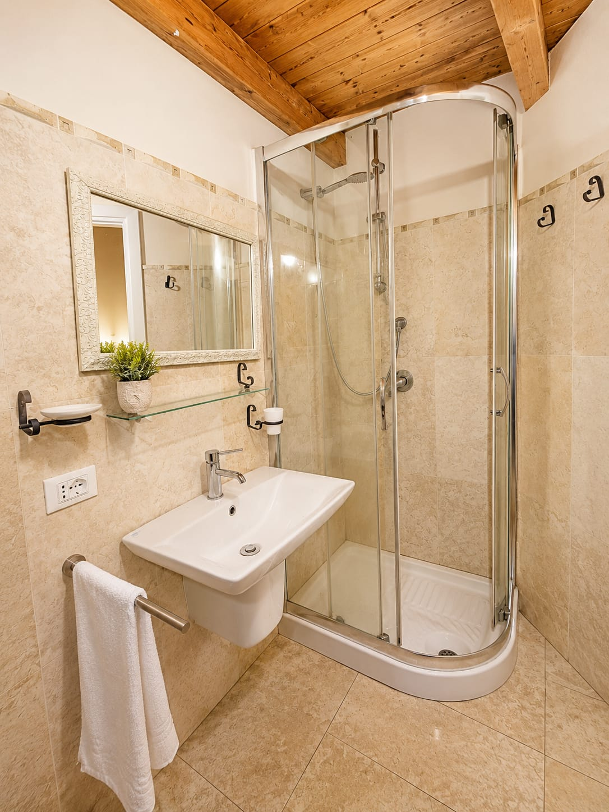

Double Room
Double · up to 2 guests · private bathroom
In the heart of Castello, bright and welcoming. Double bed and private bathroom with shower: everything you need for a comfortable stay.
- Private bathroom with shower
- Air conditioning and heating
- Fast free Wi-Fi
- Linen and toiletries provided